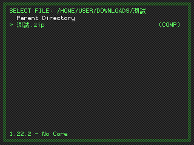

參考資訊：
https://github.com/libretro/RetroArch
https://github.com/libretro/RetroArch/pull/11569/files#diff-06e6471e091940a030b417cbd24216c7a536f434b8665e639ad0e0c648d5d218
$ cd
$ git clone https://github.com/libretro/RetroArch
$ cd RetroArch
$ git checkout 6efacc036e7754d6c76af73d4ffaf131b9325e94
$ wget https://github.com/steward-fu/website/releases/download/retroarch/Makefile.x64
$ wget https://github.com/steward-fu/website/releases/download/retroarch/rgui_cht.diff
$ git apply rgui_cht.diff
rgui_cht.diff:26: trailing whitespace.
/* 이 폰트는 PixelMPlus 입니다.
rgui_cht.diff:27: trailing whitespace.
* 입수 경로:http://itouhiro.hatenablog.com/entry/20130602/font
rgui_cht.diff:28: trailing whitespace.
* 생성일 : 2020.11.10
rgui_cht.diff:29: trailing whitespace.
* These fonts are free software.
rgui_cht.diff:30: trailing whitespace.
* Unlimited permission is granted to use, copy, and distribute them, with
warning: squelched 34667 whitespace errors
warning: 34672 lines add whitespace errors.
$ make -f Makefile.x64 -j4
$ ./retroarch
